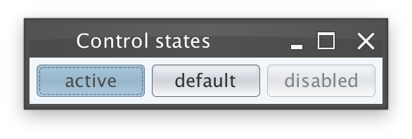
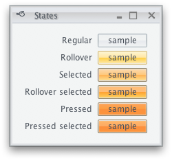

A color scheme bundle is a set of information that allows
painting controls in a specific decoration area. The
org.pushingpixels.substance.api.SubstanceColorSchemeBundle
contains all the APIs officially supported by Substance color scheme bundles.
The org.pushingpixels.substance.api.ComponentState
is the base class for core and custom component states.
A color scheme bundle is created with three
major color schemes - for active, enabled and disabled controls. If no state-specific color
schemes are registered on the color scheme bundle, the major color schemes are used
for all component states. A color scheme bundle is created with the following constructor:
/**
* Creates a new color scheme bundle.
*
* @param activeColorScheme
* The active color scheme of this bundle.
* @param enabledColorScheme
* The enabled color scheme of this bundle.
* @param disabledColorScheme
* The disabled color scheme of this bundle.
*/
public SubstanceColorSchemeBundle(SubstanceColorScheme activeColorScheme,
SubstanceColorScheme enabledColorScheme,
SubstanceColorScheme disabledColorScheme)
Here is a screenshot of three buttons (active, default and disabled) under the core Business Black Steel skin:
Here is the relevant code snippet from the definition of this skin:
SubstanceColorScheme activeScheme = new SteelBlueColorScheme().tint(
0.15).named("Business Black Steel Active");
SubstanceColorScheme enabledScheme = new MetallicColorScheme().tint(
0.05).named("Business Black Steel Enabled");
SubstanceColorScheme disabledScheme = new LightGrayColorScheme().tint(
0.05).named("Business Black Steel Disabled");
// the default color scheme bundle
SubstanceColorSchemeBundle defaultSchemeBundle = new SubstanceColorSchemeBundle(
activeScheme, enabledScheme, disabledScheme);
The following API allows specifying a custom color scheme for a specific component state:
/**
* Registers a color scheme for the specific component state.
*
* @param stateColorScheme
* Color scheme for the specified component state.
* @param states
* Component states.
*/
public void registerColorScheme(SubstanceColorScheme stateColorScheme,
ComponentState... states)
For example, you can use this API if you want to visualy distinguish between buttons in rollover state and rollover selected state. Here is a screenshot of buttons in different states under the core Office Silver 2007 skin:
Here is the relevant code snippet:
defaultSchemeBundle.registerColorScheme(rolloverScheme,
ComponentState.ROLLOVER_UNSELECTED);
defaultSchemeBundle.registerColorScheme(rolloverSelectedScheme,
ComponentState.ROLLOVER_SELECTED);
defaultSchemeBundle.registerColorScheme(selectedScheme,
ComponentState.SELECTED);
defaultSchemeBundle.registerColorScheme(pressedScheme,
ComponentState.PRESSED_UNSELECTED);
defaultSchemeBundle.registerColorScheme(pressedSelectedScheme,
ComponentState.PRESSED_SELECTED);
It is possible to specify a custom alpha value for controls in some states. This can be useful if you want to use the same color scheme for both default and disabled states, and have disabled controls painted with a custom alpha translucency (making them blend with the background). Use the following API:
/**
* Registers a color scheme for the specific component state.
*
* @param stateColorScheme
* Color scheme for the specified component state.
* @param alpha
* Alpha channel for the color scheme.
* @param states
* Component states.
*/
public void registerColorScheme(SubstanceColorScheme stateColorScheme,
float alpha, ComponentState... states)
Here is sample code from the core Autumn skin that uses the same color scheme for default and disabled states, setting alpha channel to 60% for the disabled states:
SubstanceSkin.ColorSchemes schemes = SubstanceSkin
.getColorSchemes(AutumnSkin.class
.getClassLoader()
.getResource(
"org/pushingpixels/substance/api/skin/autumn.colorschemes"));
SubstanceColorScheme activeScheme = schemes.get("Autumn Active");
SubstanceColorScheme enabledScheme = schemes.get("Autumn Enabled");
SubstanceColorScheme disabledScheme = enabledScheme;
SubstanceColorSchemeBundle defaultSchemeBundle = new SubstanceColorSchemeBundle(
activeScheme, enabledScheme, disabledScheme);
defaultSchemeBundle.registerColorScheme(disabledScheme, 0.6f,
ComponentState.DISABLED_UNSELECTED);
defaultSchemeBundle.registerColorScheme(activeScheme, 0.6f,
ComponentState.DISABLED_SELECTED);
The highlight painters are used to paint highlight areas on such components as lists, tables, table headers, trees and menus. Use the following APIs to specify custom highlight color schemes for specific component states, along with custom alpha values:
/**
* Registers a highlight color scheme for the specific component state if
* the component state is not <code>null</code>, or a global highlight color
* scheme otherwise.
*
* @param stateHighlightScheme
* Highlight color scheme for the specified component state.
* @param states
* Component states. If <code>null</code>, the specified color scheme
* will be applied for all states left unspecified.
*/
public void registerHighlightColorScheme(
SubstanceColorScheme stateHighlightScheme, ComponentState... states)
/**
* Registers a highlight color scheme for the specific component state if
* the component state is not <code>null</code>, or a global highlight color
* scheme otherwise.
*
* @param stateHighlightScheme
* Highlight color scheme for the specified component state.
* @param alpha
* Alpha channel for the highlight color scheme.
* @param states
* Component states. If <code>null</code>, the specified color scheme
* will be applied for all states left unspecified.
*/
public void registerHighlightColorScheme(
SubstanceColorScheme stateHighlightScheme, float alpha,
ComponentState... states)
Here is an example of using the first API to specify a custom highlight color scheme in the core Business Blue Steel skin:
SubstanceColorSchemeBundle defaultSchemeBundle = new SubstanceColorSchemeBundle(
activeScheme, enabledScheme, disabledScheme);
SubstanceSkin.ColorSchemes kitchenSinkSchemes = SubstanceSkin
.getColorSchemes("org/pushingpixels/substance/api/skin/kitchen-sink.colorschemes");
SubstanceColorScheme highlightColorScheme = kitchenSinkSchemes
.get("Business Blue Steel Highlight");
defaultSchemeBundle.registerHighlightColorScheme(highlightColorScheme);
And here is an example of using the second API to set state-specific alpha values for highlights in the core Business Black Steel skin:
SubstanceColorSchemeBundle defaultSchemeBundle = new SubstanceColorSchemeBundle(
activeScheme, enabledScheme, disabledScheme);
defaultSchemeBundle.registerHighlightColorScheme(activeScheme, 0.6f,
ComponentState.ROLLOVER_UNSELECTED);
defaultSchemeBundle.registerHighlightColorScheme(activeScheme, 0.8f,
ComponentState.SELECTED);
defaultSchemeBundle.registerHighlightColorScheme(activeScheme, 0.95f,
ComponentState.ROLLOVER_SELECTED);
defaultSchemeBundle.registerHighlightColorScheme(activeScheme, 0.8f,
ComponentState.ARMED, ComponentState.ROLLOVER_ARMED);
As described in the color
scheme association kind documentation, Swing controls have different visual areas. Even
such a simple example as JCheckBox icon
has three different visual areas: inner fill, border and the "V" mark:

Use the following API to specify custom color schemes to be used for specific visual areas under specific component states:
/**
* Registers the color scheme to be used for the specified visual area of
* controls under the specified states. For example, if the light orange
* scheme has to be used for gradient fill of rollover selected and rollover
* controls, the parameters would be:
*
* <ul>
* <li><code>scheme</code>=light orange scheme</li>
* <li>
* <code>associationKind</code>={@link ColorSchemeAssociationKind#FILL}</li>
* <li>
* <code>states</code>={@link ComponentState#ROLLOVER_SELECTED}, {@link ComponentState#ROLLOVER_UNSELECTED}
* </li>
* </ul>
*
* @param scheme
* Color scheme.
* @param associationKind
* Color scheme association kind that specifies the visual areas
* of controls to be painted with this color scheme.
* @param states
* Component states that further restrict the usage of the
* specified color scheme.
* @since version 5.1
*/
public void registerColorScheme(SubstanceColorScheme scheme,
ColorSchemeAssociationKind associationKind,
ComponentState... states)
Here is an example of using this API in the core
Office Silver 2007 skin skin to specify
a custom color scheme to be used on borders of controls in the
ComponentState.SELECTED state:
defaultSchemeBundle.registerColorScheme(borderSelectedScheme,
ColorSchemeAssociationKind.BORDER, ComponentState.SELECTED);
As with color schemes, it is possible to create a derived color scheme bundle. The same warning applies - a color scheme bundle is a delicate collection of different color schemes and alpha values carefully chosen to work together in providing visually appealing appearance and consistent animation sequences. In some cases, creating a derived color scheme bundle will result in poor visuals.
You can use the following API to create a derived color scheme bundle:
/**
* Creates a new color scheme bundle that has the same settings as this
* color scheme bundle with the addition of applying the specified color
* scheme transformation on all the relevant color schemes
*
* @param transform
* Color scheme transformation.
* @return The new color scheme bundle.
*/
public SubstanceColorSchemeBundle transform(ColorSchemeTransform transform)
Where the color scheme transformation is defined by the following interface:
/**
* Defines transformation on a color scheme.
*
* @author Kirill Grouchnikov
*/
public interface ColorSchemeTransform {
/**
* Transforms the specified color scheme.
*
* @param scheme
* The original color scheme to transform.
* @return The transformed color scheme.
*/
public SubstanceColorScheme transform(SubstanceColorScheme scheme);
}